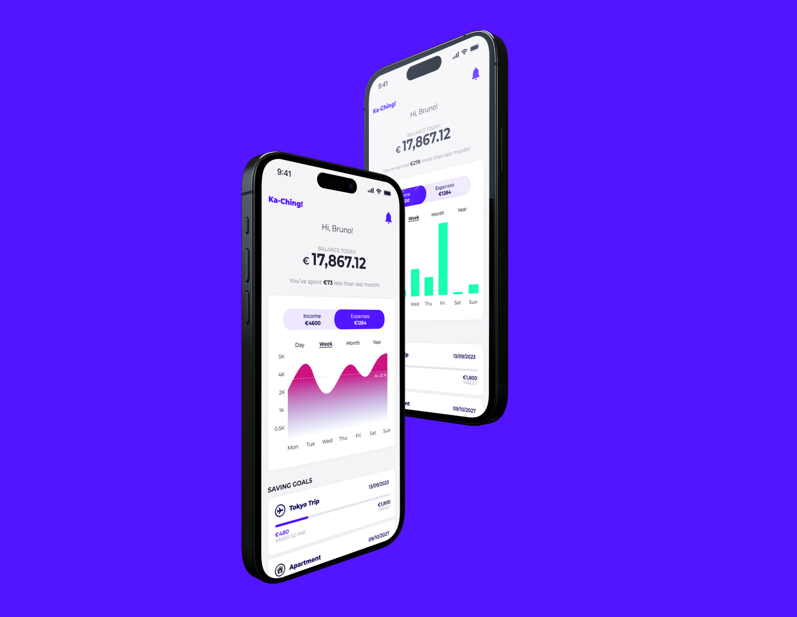

Ka-ching
Ka-ching is a mobile app that gives users the opportunity to manage their money more efficiently, so they can save money to achieve their financial goals.
About the project
What for?
Ka-ching is a mobile app that helps people to manage their money more efficiently so they can afford their dream goods.
The audience
The audience are young adults who want to learn about saving money and how to make wiser financial decisions.
The reason
Saving money is not an easy one in times of consumerism and economic crisis, especially when you don't have any experience nor know-how.
Project Goal
Developing the branding and design for fintech application that facilitates rapid savings for a specific financial goal.
To give people access to real-time insights so they could achieve their financial goal.
The problems
- Financial vocabulary is full of jargon and complex data which is hard to understand and extract the information that user needs.
- The users wants to have an access to their financial summaries quickly and without doind the calculations themselves.
- Some users would rather not give their finance data before seeing the product.
The solutions
- Breaking data down to into easily understadable and accessible format, designing dashboard of user's finances along with the necessary summaries, while providing the access to further details; all of that is crucial for retaining the users.
- Financial data should be presented clearly so the user could absorb it fast and without an effort. Users should have quick access to financial summaries at a glance.
- Due to sensitive nature of finance data, users have a choice They can provide the data during the onboarding process or they can do it later in settings.
The approach
The design process included:
- Conducting a Research
- Creating User Flows and User Persona
- Designing Low-fi Wireframes
- Developing Brand Guidelines
- Creating Mid&High-fid Wireframes
- Prototyping&Testing